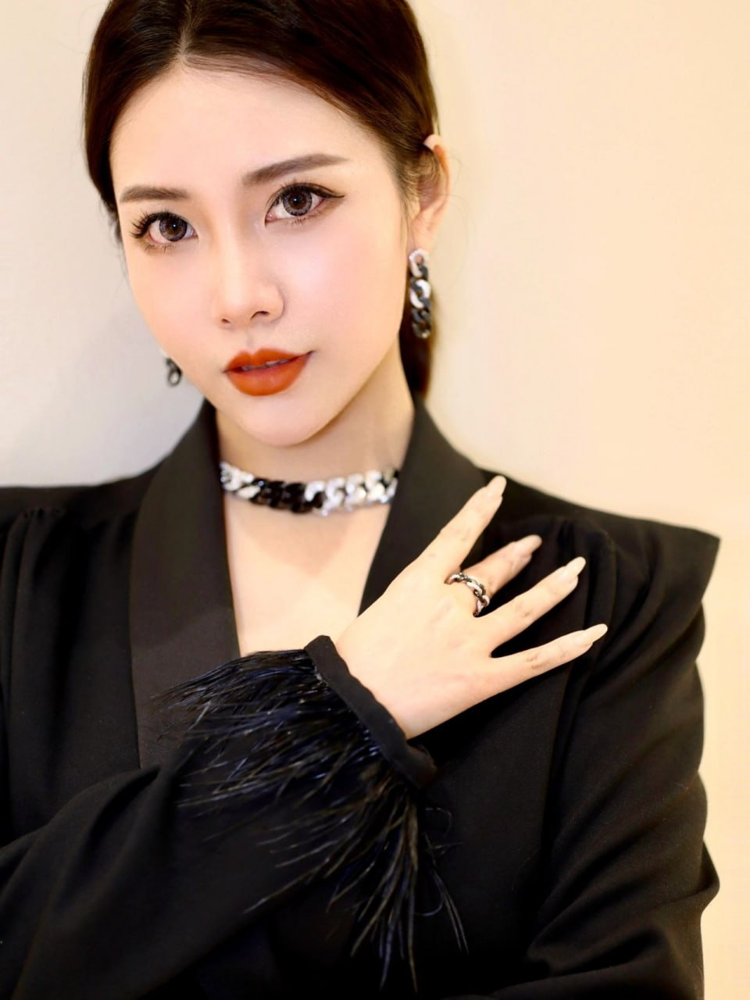
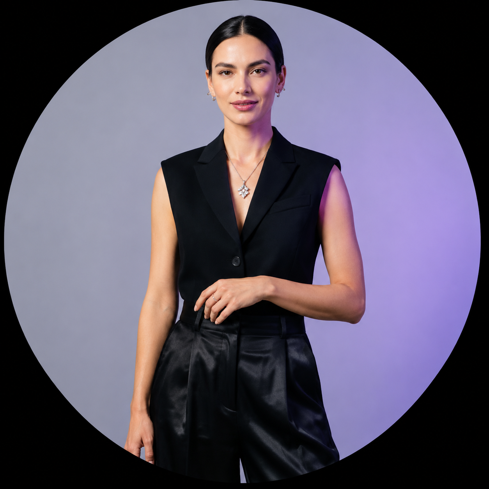
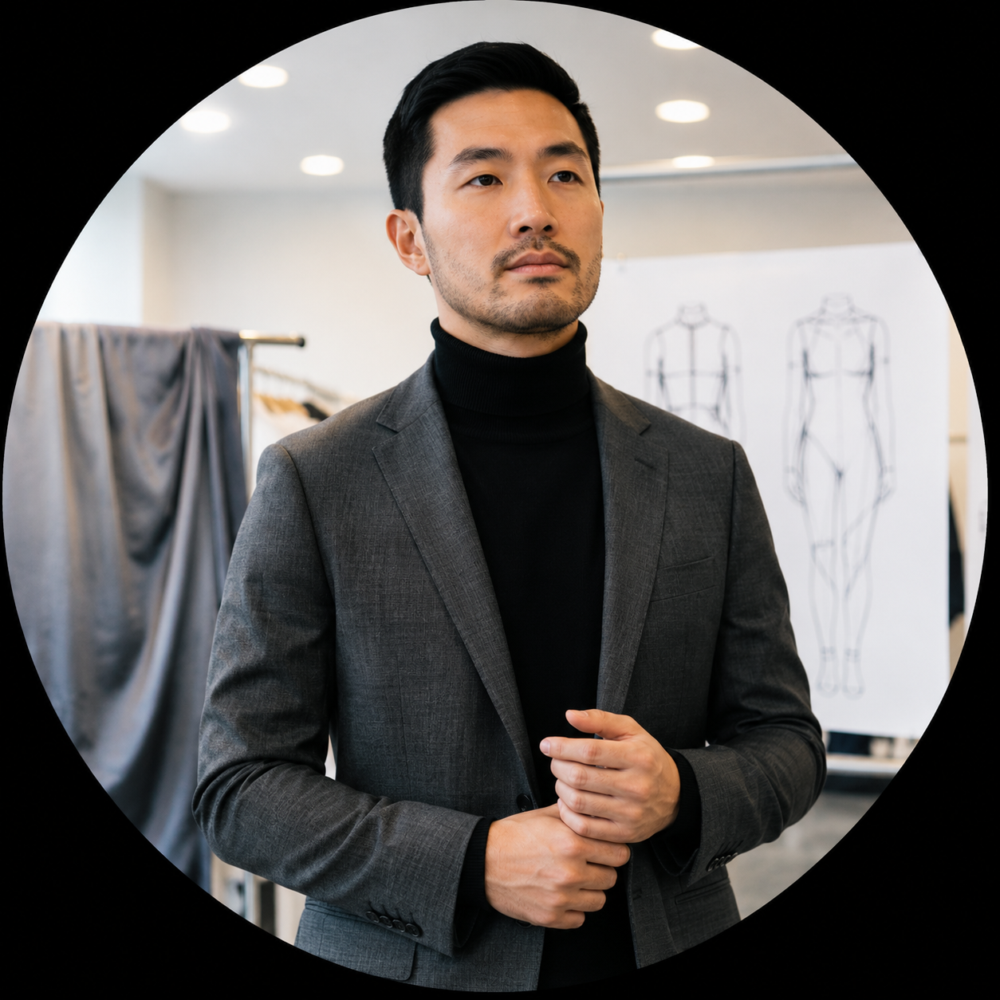

Material First
We shape each product around fiber and fabric, letting material guide the design.
We create thoughtful womenswear shaped by fiber, touch, and the way women live every day.
A garment begins with its material, then comes to life through cut, wear, and time.
We created SOROFIB to reconnect textiles, design, and real life. We consider how fabrics feel, drape, recover, and wear over time—designing clothes to move with the body, beyond a single moment.
With restrained lines and attentive product development, we explore enduring pieces for the modern woman's wardrobe. Our point of view lives in proportion, texture, and detail.
We shape each product around fiber and fabric, letting material guide the design.
We consider movement, touch, and everyday styling so good design feels natural in real life.
We value wearability, versatility, and longer use over the pull of fleeting trends.
Material is part of the product experience, not a footnote. SOROFIB studies fibers, yarns, and textile structures to understand differences in softness, recovery, drape, and durability.
Sorona® is one bio-based material platform we are exploring. Performance varies with fiber blends, fabric construction, and garment finishing. We describe material attributes carefully, based on product testing and available supplier information.
Brand, materials, and product development come together at the same table. Our team brings complementary perspectives to the work.

Born in Taipei, Mia studied business management and market strategy at the National University of Singapore. She brings more than five years of sales leadership experience in her family business, followed by entrepreneurial and investment work in the United States. Her interests include material innovation, apparel development, and global markets. At SOROFIB, she guides brand direction, product definition, and commercialization.
Mia believes a deeper understanding of materials makes a product's value clearer. From fiber selection to the finished garment, design should be grounded in real wear and lasting use.
Executive Partner ↗Elias focuses on polymer and fiber research, examining material structures, baseline properties, and potential apparel applications to inform product development.

Isabella works across styling and creative direction, translating cultural and trend observations into clear, considered, wearable collection concepts.

Julian focuses on garment construction and product development, bringing pattern, fabric behavior, and make details together from concept through finished sample.

Elena works on knit structures and yarn development, exploring fibers such as Sorona® across textile constructions and collaborating with the product team to assess wear experience.
We develop ideas through material exploration, samples, and wear evaluation to create pieces made for a lasting place in the wardrobe.
We review fiber, yarn, and fabric information against design goals, documenting available supplier materials.
We study hand feel, drape, recovery, and construction to identify fabrics suited to each product's use.
Material behavior informs pattern and construction decisions as we refine proportion, movement, and detail.
Fit sessions, care considerations, and practical feedback guide continued revisions and real-world evaluation.
SOROFIB considers responsible material choices part of a long-term product strategy, with attention to sourcing, durability, and product life. Bio-based content, environmental attributes, and certifications for Sorona® or other materials should be verified against supplier documentation, product labeling, and applicable regulations. Environmental impacts vary with formulation, manufacturing, use, and care. We do not make unverified broad environmental or certification claims.
Product imagery and collection information are presented for brand reference. Actual materials, colors, care instructions, and availability are subject to product details and official labeling. Website content does not constitute medical, performance, or environmental certification claims.
This season begins with the space between body and fabric. Softness can hold its shape, and structure can feel light. Each piece leaves room to move.
Read the Season Story ↓The Quiet Form is a study in restraint and the feeling of clothing on the body. Fluid lines, soft structure, and easy-to-layer proportions speak to a sense of ease in everyday life.
This season starts with how fabric behaves: drape shapes the silhouette, measured recovery supports movement, and details serve the act of wearing. Pieces are designed to work together across work, travel, and everyday life.
We value the possibility of returning to a garment again and again. Materials and finished-garment performance vary by style; fiber content and care details will be provided with product information.
Ask About the Season ↗This season's material choices consider hand feel, structural stability, and ease of styling. We will share fiber content, care, and construction details for each product to help you understand how a garment is made and how to care for it.
Specific descriptions of fiber performance and environmental attributes should be verified against product-specific supplier documentation and official labeling.
For product, partnership, or material research inquiries, please get in touch.
hello@sorofib.com ↗3501 Santa Monica
Torrance, Los Angeles, CA
Wholesale & press
hello@sorofib.com
Please contact us before visiting.